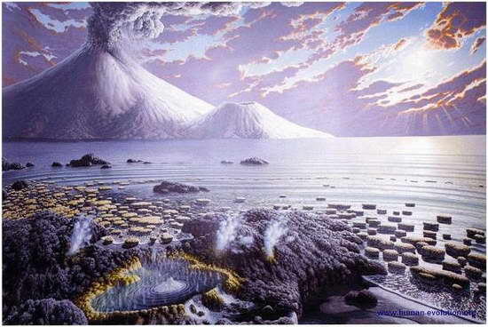
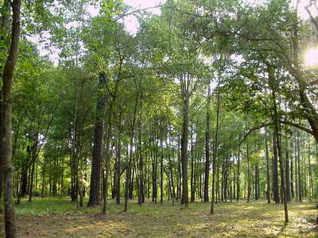
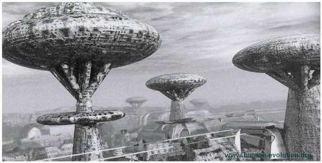
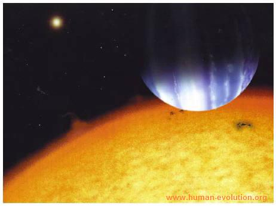
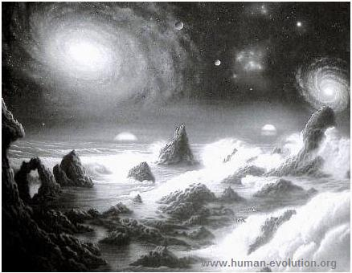
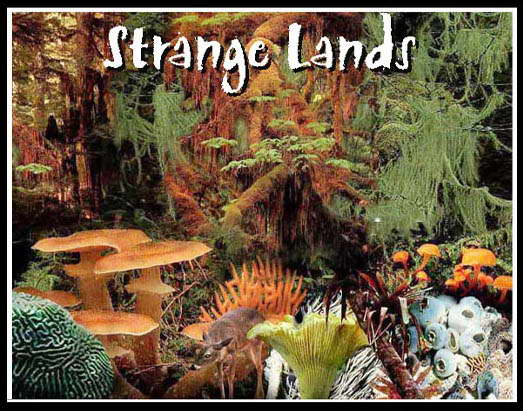
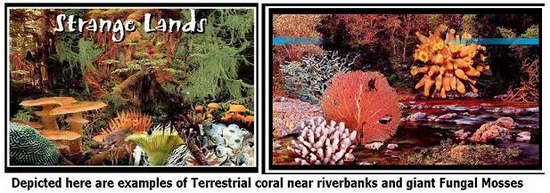
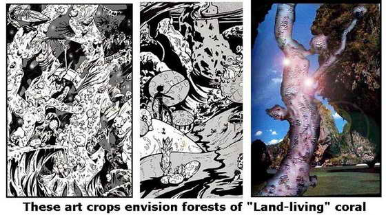

Comic Art
Original Comic Series
Strange Lands
The geological clock is ticking
As humans evolved, the land that we inhabit was always subject to change. Billions of years ago, the world was immersed in a brew of hot volcanic climates. These volcanic springs, and mountains added vital chemical elements to the earth's atmosphere, which eventually included the building blocks of life.

During the time of the dinosaurs and well before that, rich forests that consisted of primitive ferns and shallow seas covered the earth. Eventually, after the last great extinction of the Cretaceous, humans among their mammalian brethren had the opportunity to take dominance. When mankind spawned from ape-like ancestors, they were soon faced with trying to tame the environment. Hunting parties that existed in nomadic tribes dependent on following the herds of game needed to make a change. This change came in the form of farming and farming eventually gave rise to the first civilizations.

The first civilizations were humble, but not long after the growth in population, they suddenly became grandiose. The ancient temples and cities of Mezzo-America, Egypt, and Greece rose and soon Mega-civilizations like the Roman Empire came into existence.

But what will new habitats in the future be like for man? First off, the earth may no longer be the restricted habitat for human beings. The advances in technology may very well bring about colonization on other planets, probably many in our own solar system.

For example, the moon is close to us in terms of cosmic distance, so naturally, it would seem that the space stations that we are building today, would eventually evolve into lunar bases, and from there, the first true moon colonies. NASA experts concede that the moon's atmosphere-less space would require a covering of some type. Immune to Terra-forming, the lunar landscape would almost certainly consist of large colonies covered by huge protective bubbles, while other colonies would be dispersed under the moon's pliable crust.

Those living under ground would probably share most of the living quarters and industrial areas, being as how that particular environment is more protected against cosmic bombardment from small asteroids and such.

Mars, too, would be colonized, but with much greater success. Planting massive colonies that are designed to change the surrounding atmosphere, these Terra-forming colonies after centuries, would become large, technologically advanced cities. Like the Martian landscape of the film "Total Recall", the cities would probably be comprised of a bustling metropolis. In Ray Bradburry's the "Martian Chronicles", earth visitors take up residence over the old and unknown ruins of an ancient civilization of Martian beings. Mars was often the focus of many science fiction serial stories during the 50's and 60's, but the reality of colonizing mars is in serious consideration today.

But exploration toward moons as well as planets may be very beneficial. One moon of great interest of would-be astronauts is a moon of Jupiter called Europa. Europa is an ice-covered world with little or no atmosphere. However, it boasts huge sheets of ice that seems to move much as the earth's largest glaciers. Below Europa is a vast ocean that is as ancient as it is big. Estimated to be 60 miles deep, this massive ocean may very well be the hub of life. It is thought to contain Hot Springs and volcanic thermals, much like the earth's volcanic thermals in the deep abyss of the darkest oceans. Also like earth, it is believed that Europa might have life that is dependent on these thermals. If so, Europa's oceans may be teaming with life, both large and small. Perhaps, as I had predicted for earth's future, giant corals or something like it may be a type of life inhabiting the deep oceans and frigid tides of Europa.

Other planets may be consisted of hot and dry desserts, but still capable of supporting life. Like the Star Wars planet, "Tattoine", desert planets could still be colonized if the situations were right. Even so, there are also planets that will have incredible habitats. Some moons of Jupiter might also have vast mercury seas and contain a thick and flammable atmosphere, backed up with low gravity. With temperatures being moderate, it's feasible that human bases could exist there if people and their environments were closed off from poisons and such. In an area like this, a person could wade through a mercury beach wearing an environmental suite.
Wherever mankind treads, he will most likely leave a remnant behind. These remnants would most certainly be the seeds of colonization; from there, the universe becomes the foothold of cosmic opportunity!
^ Top ^